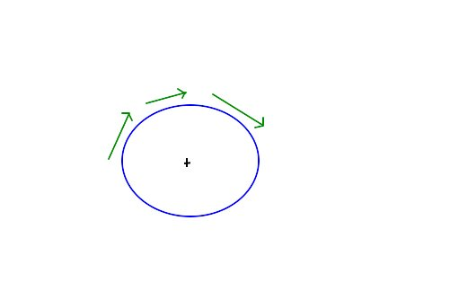
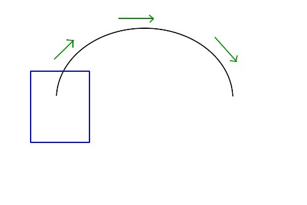

segway inspired vehicle
I liked this segway inspired vehicle when I saw an article about it on MIT TR.
Being inspired by segway is probably not a great thing, because Segway itself is deemed as a big failure. But this vehicle, PUMA, is technically interesting.
To begin with, it is a self-balanced, two wheel vehicle, which is also battery operated and has bunch of other features (GPS etc). It is small, enclosed and can seat two people. It is something between a car and a two-wheeler, so it perhaps competes with both. But what really caught my eye was, its maneuverability - look at the way it takes the about turn (the last part of the demo video).
This is the first vehicle, I have seen, that can turn a full circle about its own center.

Let us say we have a vehicle that looks very much like the blue circle in the diagram, when looked from top. Now if the vehicle had to take a right/about turn, it would try to go around its own center, and all the while, its shape would look the same from the top. Which means, it can take an about turn without asking for any additional space on the road. If you cannot see the advantage it could have, here’s a diagram of what it looks like when our current car/bike takes a U-turn.

It has to take at least the space equal to its own length (actually more), perpendicular to its direction of motion, to take that turn. This is one of the many problems faced by crowded cities where infrastructure is limited (like Bangalore/Chennai in India). A vehicle that could turn about its own center without asking for that extra space would much improve space utilization on crowded roads.
As my knowledge of automobile technology is very limited, I don’t know why existing automobile makers don’t try making such vehicles. But as I liked the idea, I sure have a wish-list for the PUMA -
- Make the design more robust. It should work in Indian conditions.
- Get rid of all the fancy features - GPS and all - they add to the price, and we can get them installed if we want.
- Have a fossil-fuel variant. We have very limited infrastructure for electric-vehicles here.
- If possible, have seating for four people instead of two. It would then serve as a perfect replacement for autos/taxis in urban India.